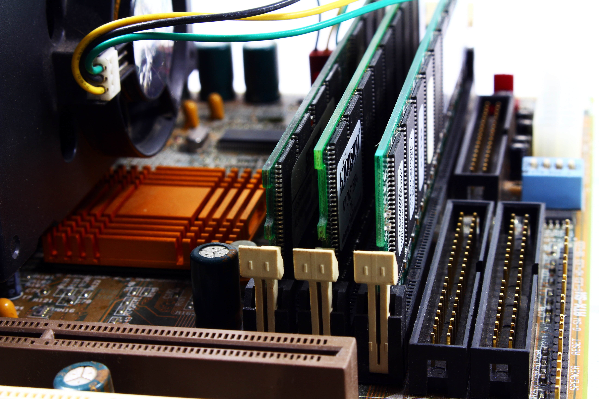
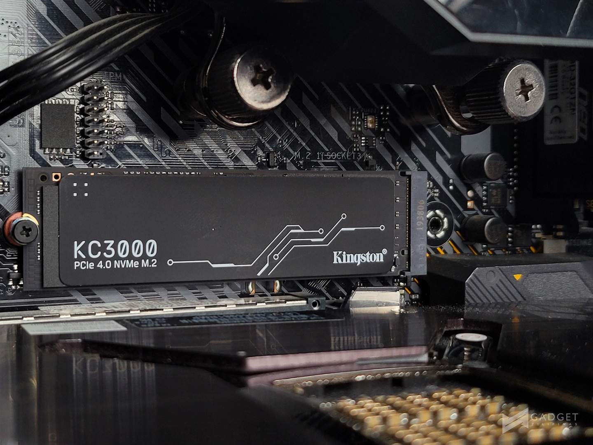

Bilgisayar Donanımı ve Donanım Parçaları Nelerdir?
İç Donanım Parçaları
Dış Donanım Parçaları
İşlemci (CPU) Nedir?
Merkezi işlem birimi olan işlemci, bilgisayarda yapılmak istenen bütün hareketlerin yapılmasını sağlamaktadır. Matematiksel işlem yardımı ile işlemekte olup bir saniyeden bile az bir zamanda işlemlerin gerçekleşmesine olanak vermektedir. Yapısında milyonlarca transistör vardır ve bunlar yarı iletken malzemelerdir. İşlemci kendine gelen komutları kısa süre içerisinde işleyip sonuçlarını belleklere göndermektedir. İşlemci üreten birçok firma yer almakta olup tüketicinin isteklerine göre düşük ve yüksek fiyatlı işlemciler çıkarılmaktadır.
İşlemcinin çalışabilmesi için işlemciye ne yapması gerektiğini söyleyecek programlar gerekmektedir. İşlemci her saniyede milyarlarca konutu işleyebilme özelliğine sahiptir ve bilgisayarda yapılmak istenen işlem kısa süre içerisinde gerçekleşmektedir. Akıllı telefon hatta televizyon satın alırken bile işlemcinin detaylarını bilmek, kaliteli ürün almayı kolaylaştırmaktadır. Bilgisayarda oturan birinin fareyi hareket ettirebilmesi için bile işlemciyi kullanması gerekmektedir. İşlemci üzerinde çeşitli mimari yapılar vardır ve bu yapılar, işlemcinin performansını etkilemektedir.
İşlemci Türleri

İşlemci nedir sorusunu yanıtladığımıza göre şimdi sıra geldi işlemci türlerini öğrenmeye. İşlemciler birden çok alanda farklılık göstermektedir. Bunlardan ilki çekirdek sayısı. Eskiden sadece tek çekirdekli işlemciler vardı. Daha sonrasında teknolojinin gelişmesi ile önce çift çekirdekli(dual core), sonra dört çekirdekli (quad core) ve daha sonrasında da sekiz çekirdekli (octa core) işlemciler piyasaya çıktı.
Çekirdek sayılarının artmış olması aslında iyi bir şey. Çünkü bu sayede işlemciler aynı anda birden fazla işlem yapabilme özelliğine kavuşmaya başladı. Yani daha kısa sürede daha fazla işlemin sonucunu alabiliyoruz. Biz buna multi-tasking diyoruz. Günümüzde artık tek çekirdekli işlemcileri görmek çok mümkün değil. Artık kendilerini tarihin tozlu raflarına kaldırdık.
İşlemcileri bir de mimari yapılarına göre birbirinden ayırıyoruz. Günümüzde iki farklı mimari tür var. 32 bit ve 64 bit. Bu tabirler size bir yerden tanıdık geliyor olabilir. Evet, işletim sisteminde de aynı terimleri görüyoruz.
32 bit işlemciler 90’lı yılların başında oldukça revaçtaydı. Fakat daha sonra 64 bit işlemciler ortaya çıktı ve 32 bit işlemciler gölgede kalmaya başladı. Peki aradaki fark nedir? Hız farkı. Saniye başına yaptıkları işlem hızları değişiklik gösteriyor ve tahmin edebileceğiniz üzere 64 bit işlemciler daha hızlı.
Ekran Kartı (GPU) Nedir?

Ekran kartı ya da grafik kartı olarak adlandırılan bileşenlerin temel görevi, bilgisayardaki görüntüyü işleyip, monitöre aktarılmasını sağlamaktır. Bu kadar basit şekilde anlatıp kısa bir cümle ile özetlendiğine bakmayın, günümüz teknolojisi sayesinde ekran kartlarına gelen özellikler, hem günümüzü kolaylaştırıyor hem de daha kaliteli sonuçlar elde etmemize yarıyor. Ekran kartının gücüyle doğru orantılı olarak işlenen veriler sayesinde daha yüksek grafikli oyunlar ve daha yüksek performans elde edebiliyoruz. Monitörde gördüğünüz ne varsa ekran kartı tarafından işlenip, sonrasında monitöre aktarılıyor. Yani aslında fazlasıyla önemli bir bileşen.
Ekran Kartı Ne İşe Yarar?
Piyasada birbirinden farklı pek çok ekran kartı bulunuyor. Bunların bazıları çok yüksek fiyatlardan satılıyor.Peki sadece görüntüyü işleyen bu bileşen için neden bu kadar farklı seçenek bulunuyor?
Bunun başlıca sebebi, piyasadaki rekabet ve daha çok kitleye ulaşılmak istenmesi. Her insanın bilgisayarı kullanım amacı bir olmuyor. İş bilgisayarları için piyasada bulunan özel modeller bulunurken, oyun oynamayı seven kişiler için farklı, ofis bilgisayarları için farklı modeller bulunuyor. Hatta bunlarda kendi aralarında pek çok farklı modele ve markaya ayrılabiliyor.
Bu farklı ekran kartları birbirinden farklı teknolojik özellikleri de yanında getiriyor. Örneğin NVIDIA'nın Real Time Ray Traycing teknolojisi sayesinde oyunlardaki grafikler daha da gelişmeye başladı. Bu teknoloji, bir yerde bulunan ışığın doğal ortamda nasıl bir yol izlediğini hesaplayıp, ortamın nasıl ışıklandırılması gerektiğine yardım ediyor. Bu sayede çok daha gerçekçi grafiklere sahip oyunlar oynayabiliyoruz.
Anakart Nedir, Ne İşe Yarar, Nasıl Çalışır?

Anakart, bilgisayarın en önemli bileşenlerinden biridir. Bilgisayarın diğer bileşenlerinin birbirleriyle iletişimde olmasını sağlamak gibi önemli görevleri olan anakartın işlevi ve ne işe yaradığı merak edilen bir konudur. Biz de sizlere bu yazımızda anakart nedir, ne işe yarar ve nasıl çalışır sorularının cevaplarını veriyoruz.
İlk defa 1982'de IBM bilgisayarlarında kullanılmış olan anakart, teknolojinin gelişmesiyle birlikte daha da önemli hale geldi. Bir insan iskeleti o insan için ne kadar önemliyse, bir anakart da bilgisayar için o kadar önemli. Anakartınız ne kadar gelişmiş ve güçlü olursa, bilgisayarınızın kaldırabileceği yük veya üzerinde barındıracağı donanım da o kadar güçlü ve dayanıklı olur. Kısaca anakart için bilgisayarın iskeleti olduğunu söyleyebiliriz.
Anakart yalnızca bilgisayarlarda değil, diğer birçok elektronik cihazlarda da bulunur. Tüm bu anakartların hemen hemen hepsi aynı görevi yerine getirir. Anakart denilince akıllara ilk bilgisayarların gelmesinin sebebinin bilgisayarların genel kullanım alanlarının çeşitli ve daha fazla olmasından dolayı olduğunu söyleyebiliriz. Dilerseniz birlikte anakart nedir, ne işe yarar ve nasıl çalışır sorularının cevaplarına beraber bir göz atalım.
Anakart Nedir?
Bilgisayar başta olmak üzere televizyon ve cep telefonu gibi elektronik cihazlarda da bulunan, donanımların bir araya toplanması ve bu donanımların birbirleri ile iletişim kurarak koordineli bir şekilde çalışmalarını sağlayan parçaya anakart (motherboard) denir.
Anakart Ne İşe Yarar?
- Güç sağlar ve güç dağıtımı yapar.
- Bios sayesinde işlemleri yürütür.
- Diğer bileşenlerle iletişim kurar.
- Veri akışını sağlar.
- Bilgisayarın performansını belirler.
- Bileşenler arasındaki uyum sayesinde maksimum performans sağlar.
Anakart Çalışma Prensibi
Pentium işlemcilerin piyasaya sürülmesi anakart alanında büyük değişimleri beraberinde getirmiştir. Bilgisayarlarda geniş yer kaplayan anakartların birincil görevi, bilgisayara takılan farklı donanım ve çevre birimleri chipset işlemciler aracılığıyla tek bir yerde toplamaktır. Anakartların temel çalışma prensibi tüm parçaların uyum içinde çalışma esasına dayanır.
Donanımsal ve işlevsel parçalar birbirleriyle doğrudan iletişim kuramadığı için anakart bu görevi üstlenir. Bir örnekle açıklamak gerekirse, harddisk üzerinde işlenen bir veri veya ekran ya da ses kartı üzerinde işlenen bir veri için gereken transfer anakart aracılığıyla gerçekleştirilir.
RAM (Bellek) Nedir?

RAM, sadece bilgisayar türlerinin değil, aynı zamanda tabletlerin, akıllı telefonların ve oyun konsollarının da önemli bir bileşeni. RAM bellek olmadan herhangi bir sistem üzerinde yapılacak işlemler, çok daha yavaş oluyor.
Hatta RAM belleğiniz yeterli değilse, kullandığınız program ya da açtığınız oyun aşırı yavaş işleyecek veya hiç açılmayacaktır.
RAM nedir kısaca açıklamak gerekirse, şu an ya da yakın gelecekte bilgisayarınızın ihtiyaç duyacağı tüm bilgileri geçici olarak depolayan, aşırı hızlı bir bellektir diyebiliriz. RAM bellek, bilgisayarınızın kısa süre içinde ihtiyacı olacağını düşündüğü şeyleri depoladığı ve ihtiyaç anında aşırı hızlı bir şekilde bu bilgileri okuyan donanımdır.
Bellek olduğunu söylemiş olsak da bilgisayarımızdaki diğer bir donanım parçası olan ve uzun süreli depolama sağlayan hard diskten tamamıyla farklı.
RAM bellek nedir sorusuna kısa bir açıklama yaptığımıza göre, RAM ne demek ona bakalım.
RAM Ne Demek?
RAM ne demek anlamak için öncelikle kısaltma olan bu tabiri bir açalım. İngilizce olarak “Random Access Memory” denilen RAM bellek, Türkçe olarak “Rastgele Erişilebilir Bellek” diye tanımlanıyor.
Galiba, RAM ne demek sorusuna verilebilecek en güzel yanıtlardan biri; sisteminizin kısa süreli belleği demek olacaktır. Yeni şeyleri öğrenmekte çok hızlıdır ve hızlı bir şekilde ulaşabilelim diye web tarayıcımız, kullandığımız düzenleme aracı ya da oynamakta olduğumuz oyun hakkındaki bütün bilgileri depolar.
Eğer RAM bellekler yerine bu bilgileri uzun süreli depolama sağlayan hard disklerden istiyor olsaydık, istediğimiz her bilgiyi her seferinde yeniden açmamız gerekebilirdi.
RAM sürekli olarak tek bir konuya odaklanmak üzerine tasarlanmamıştır ve bir anda yeni bir göreve başlayabilir.
Tabii RAM belleğe bu bilgileri depoluyor diyoruz ama bu bilgileri sürekli olarak barındırmıyor. Yani enerjisi kesilince tüm bu bilgileri unutuyor diyebiliriz.
Güç Kaynağı (PSU) Nedir?
Power supply bilinen adıyla güç kaynağı bilgisayarda yer alan donanımları çalıştırarak gereken enerjinin eşit oranda dağıtılması için kullanılan parça olarak tanımlanır. Power supply olarak bilinen bu parçanın bir diğer adı da PSU yani power supply unit şeklindedir.
Güç kaynağı elektrik enerjisini, DC akıma dönüştürür. Buna göre, DC akıma dönüşen enerji bilgisayar için gereken desteği sağlamış olur. Bilgisayarlarda geniş yer kaplayan güç kaynağı aynı zamanda farklı cihazların çalışmasında da aktif rol oynar.
Genel olarak standart bir bilgisayarda kullanılan güç kaynağı yaklaşık 300 ile 600 Watt değerine sahiptir. Başlangıçta 220 Watt olan elektrik güç kaynağı daha sonra 6 -12 Watt seviyesine doğru dönüşme sağlar.
Gelişen teknoloji ile birlikte güç kaynağı kullanımı farklı bir noktaya evrilmiştir. Bu noktada bilgisayar kullanıcıları yeni bir cihaz satın alırken power supply değerini göz önünde bulundurarak tercih yapar. Kullanıcıların bu detaya dikkat etmesinin en önemli nedeni, güç kaynağının watt değerinin bilgisayarın performansını doğrudan etkileyecek olmasıdır. Bilgisayarınızda güç kaynağının yetersiz olması aynı zamanda düşük düzeyde bir performans deneyimi yaşamanıza neden olacaktır.
Bilgisayarların ve diğer cihazların içerisinde bulunan güç kaynağı genelde metal kasa ile yerleştirilmiş bir parça olarak karşınıza çıkar. Gerekli enerji dağılımını sağlayan güç kaynağının içerisinde transformatör ve elektronik devreler gerekli ölçümleri gerçekleştirir. Daha sonra ölçüm sonucunu akımı parçalara ileterek, bilgisayara gelen elektrik akımını eşit bir şekilde dağıtır.
Power Supply Ne İşe Yarar?
Güç kaynağı'nın temel amacı, bilgisayarınız için gereken enerjiyi sağlamak olduğu için ısınma ve soğuma gibi durumlar ortaya çıkabilir. Cihazınız için gereken enerjiyi sağlayan güç kaynağının işini kolaylaştıran parçaların başında fan desteği yer alır. Power supply, RAM ve işlemcinin bulunduğu yuvalara yakın konumda yer alır. Bu nedenle sıcak havanın fan ile en kısa şekilde dışarı çıkmasına yardımcı olur.
Güç kaynağı genel anlamda çok fazla enerji tükettiğinden dolayı bir fan desteğinin bulunması oldukça önemlidir. Aksi takdirde güç kaynağı fazla ısınacağı için yanma ya da arıza gibi problemler ortaya çıkabilir. Günümüzde ATX güç kaynakları en sık kullanılanların başında yer alır. ATX güç kaynaklarında güç kontrolü dijital bir şekilde gerçekleştiği için daha kontrollü bir kullanım sergiler.
Sabit Disk (HDD,SSD) Nedir?
Sabit disk, tüm dijital içeriğinizi depolayan donanım bileşenidir. Belgeleriniz, resimleriniz, müzikleriniz, videolarınız, programlarınız, uygulama tercihleriniz ve işletim sisteminiz sabit diskte depolanan dijital içeriği temsil eder. Sabit diskler harici veya dahili olabilir.
Bir sabit diskte depolanan her şey, dosya boyutuyla ölçülür. Belgeler (metin) genellikle çok küçükken resimler büyüktür. Müzikler daha büyük boyuta, videolar ise en büyük boyuta sahiptir. Sabit disk, dijital dosyaların boyutunu megabayt (MB), gigabayt (GB) ve terabayt (TB) cinsinden belirler.
En İyi Sabit Disk Boyutu Nedir?
Duruma göre değişir. Bilgisayar ve yedek disk arasında sınırlı sayıda dosyayı aktarmanız gerekiyorsa küçük bir disk (Expansion Drive veya Backup Plus) işinize yarayacaktır. Bütün bilgisayarınızı veya birden fazla bilgisayarı yedeklemek istiyorsanız ya da çok sayıda video ve/veya ses dosyası depoluyorsanız daha büyük bir disk (Backup Plus Desktop Drive) kullanmak istersiniz.
- YouTube videosu için Hafif Mühendis kanalına teşekkür ederiz.
Yorumlar